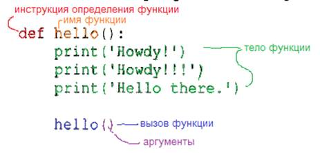
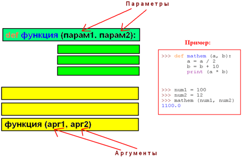

ФУНКЦИИ
Функция в программировании представляет собой обособленный участок кода, который можно вызывать, обратившись к нему по имени, которым он был назван. При вызове происходит выполнение команд тела функции.
Функции можно сравнить с небольшими программками, которые сами по себе, т. е. автономно, не исполняются, а встраиваются в обычную программу. Нередко их так и называют – подпрограммы. Других ключевых отличий функций от программ нет. Функции также при необходимости могут получать и возвращать данные. Только обычно они их получают не с ввода (клавиатуры, файла и др.), а из вызывающей программы. Сюда же они возвращают результат своей работы.
Существует множество встроенных в язык программирования функций. Например, print(), input(), int(), float(), str(), type(). Код их тела нам не виден, он где-то "спрятан внутри языка". Нам же предоставляется только интерфейс – имя функции.
С другой стороны, программист всегда может определять свои функции. Их называют пользовательскими. Предположим, надо три раза подряд запрашивать на ввод пару чисел и складывать их. С этой целью можно использовать цикл:
i = 0
while i < 3:
a = int(input())
b = int(input())
print(a+b)
i += 1
Однако, что если перед каждым запросом чисел, надо выводить надпись, зачем они нужны, и каждый раз эта надпись разная. Мы не можем прервать цикл, а затем вернуться к тому же циклу обратно. Придется отказаться от него, и тогда получится длинный код, содержащий в разных местах одинаковые участки:
print("Сколько книг и тетрадей?")
a = int(input())
b = int(input())
print("Всего", a+b, "шт.")
print("Сколько карандашей и пеналов?")
a = int(input())
b = int(input())
print("Всего", a+b, "шт.")
print("Сколько блокнотов и ручек?")
a = int(input())
b = int(input())
print("Всего", a+b, "шт.")
Пример исполнения программы:
Сколько книг и тетрадей?
15
5
Всего 20 шт.
Сколько карандашей и пеналов?
50
12
Всего 62 шт.
Сколько блокнотов и ручек?
16
8
Всего 24 шт.
Внедрение функций позволяет решить проблему дублирования кода в разных местах программы. Благодаря им можно исполнять один и тот же участок кода не сразу, а только тогда, когда он понадобится.
Определение функции. Оператор def
В языке программирования Python функции определяются с помощью оператора def. Рассмотрим код:
def countSchool():
a = int(input())
b = int(input())
print("Всего", a+b, "шт.")
Это пример определения функции. Функция состоит из заголовка и тела. Заголовок оканчивается двоеточием и переходом на новую строку. Тело имеет отступ.
Ключевое слово def сообщает интерпретатору, что перед ним определение функции. За def следует имя функции. Оно может быть любым, также как и всякий идентификатор, например, переменная. В программировании весьма желательно давать всему осмысленные имена.
После имени функции ставятся скобки. В приведенном примере они пустые. Это значит, что функция не принимает никакие данные из вызывающей ее программы. Однако она могла бы их принимать, и тогда в скобках были бы указаны так называемые параметры.
После двоеточия следует тело, содержащее инструкции, которые выполняются при вызове функции. Следует различать определение функции и ее вызов. В программном коде они не рядом и не вместе. Можно определить функцию, но ни разу ее не вызвать. Нельзя вызвать функцию, которая не была определена. Определив функцию, но ни разу не вызвав ее, вы никогда не выполните ее тела.

Вызов функции
Рассмотрим полную версию программы с функцией:
def countSchool():
a = int(input())
b = int(input())
print("Всего", a+b, "шт.")
print("Сколько книг и тетрадей?")
countSchool ()
print("Сколько карандашей и пеналов?")
countSchool ()
print("Сколько блокнотов и ручек?")
countSchool ()
После вывода на экран каждого информационного сообщения осуществляется вызов функции, который выглядит просто как упоминание ее имени со скобками. Поскольку в функцию мы ничего не передаем скобки опять же пустые. В приведенном коде функция вызывается три раза.
Когда функция вызывается, поток выполнения программы переходит к ее определению и начинает исполнять ее тело. После того, как тело функции исполнено, поток выполнения возвращается в основной код в то место, где функция вызывалась. Далее исполняется следующее за вызовом выражение.
! В языке Python определение функции должно предшествовать ее вызовам. Это связано с тем, что интерпретатор читает код строка за строкой и о том, что находится ниже по коду, ему еще неизвестно. Поэтому если вызов функции предшествует ее определению, то возникает ошибка (выбрасывается исключение NameError):
print("?")
countSchool ()
print("Сколько карандашей и пеналов?")
countSchool ()Сколько книг и тетрадей
print("Сколько блокнотов и ручек?")
countSchool ()
def countSchool():
a = int(input())
b = int(input())
print("Всего", a+b, "шт.")
Результат:
Сколько книг и тетрадей?
Traceback (most recent call last):
File "test.py", line 2, in <module>
countSchool ()
NameError: name ' countSchool ' is not defined
Функции придают программе структуру
Польза функций не только в возможности многократного вызова одного и того же кода из разных мест программы. Не менее важно, что благодаря им программа обретает четкую структуру. Функции как бы разделяют ее на обособленные части, каждая из которых выполняет свою конкретную задачу.
Пусть надо написать программу, вычисляющую площади разных фигур. Пользователь указывает, площадь какой фигуры он хочет вычислить. После этого вводит исходные данные. Например, длину и ширину в случае прямоугольника. Чтобы разделить поток выполнения на несколько ветвей, следует использовать оператор if-elif-else:
figure = input("1-прямоугольник, 2-треугольник, 3-круг: ")
if figure == '1':
a = float(input("Ширина: "))
b = float(input("Высота: "))
print("Площадь: %.2f" % (a*b))
elif figure == '2':
a = float(input("Основание: "))
h = float(input("Высота: "))
print("Площадь: %.2f" % (0.5 * a * h))
elif figure == '3':
r = float(input("Радиус: "))
print("Площадь: %.2f" % (3.14 * r**2))
else:
print("Ошибка ввода")
Следующий вариант использует функции:
def rectangle():
a = float(input("Ширина: "))
b = float(input("Высота: "))
print("Площадь: %.2f" % (a*b))
def triangle():
a = float(input("Основание: "))
h = float(input("Высота: "))
print("Площадь: %.2f" % (0.5 * a * h))
def circle():
r = float(input("Радиус: "))
print("Площадь: %.2f" % (3.14 * r**2))
figure = input("1-прямоугольник, 2-треугольник, 3-круг: ")
if figure == '1':
rectangle()
elif figure == '2':
triangle()
elif figure == '3':
circle()
else:
print("Ошибка ввода")
Он кажется сложнее, а каждая из трех функций вызывается всего один раз. Однако из общей логики программы как бы убраны и обособлены инструкции для нахождения площадей. Программа теперь состоит из отдельных "кирпичиков Лего". В основной ветке мы можем комбинировать их как угодно.
Если понадобится вычислить площадь треугольника по формуле Герона, а не через высоту, то не придется искать код во всей программе. Мы пойдем к месту определения функций и изменим тело одной из них.
Эти функции мы сможем использовать даже в другой программе, сославшись на данный файл с кодом.
Локальные и глобальные переменные
В программировании особое внимание уделяется концепции о локальных и глобальных переменных, а также связанное с ними представление об областях видимости. Соответственно, локальные переменные видны только в локальной области видимости, которой может выступать отдельно взятая функция. Глобальные переменные видны во всей программе. "Видны" – значит, известны, доступны. К ним можно обратиться по имени и получить связанное с ними значение.
К глобальной переменной можно обратиться из локальной области видимости. К локальной переменной нельзя обратиться из глобальной области видимости, потому что локальная переменная существует только в момент выполнения тела функции. При выходе из нее, локальные переменные исчезают. Компьютерная память, которая под них отводилась, освобождается. Когда функция будет снова вызвана, локальные переменные будут созданы заново.
Вернемся к программе вычисления площади, немного упростив ее для удобства:
def rectangle():
a = float(input("Ширина: "))
b = float(input("Высота: "))
print("Площадь: %.2f" % (a*b))
def triangle():
a = float(input("Основание: "))
h = float(input("Высота: "))
print("Площадь: %.2f" % (0.5 * a * h))
figure = input("1-прямоугольник, 2-треугольник: ")
if figure == '1':
rectangle()
elif figure == '2':
triangle()
Сколько здесь переменных? Какие из них являются глобальными, а какие – локальными?
Здесь пять переменных. Глобальной является только figure. Переменные a и b из функции rectangle(), а также a и h из triangle() – локальные. !При этом локальные переменные с одним и тем же идентификатором a, но объявленные в разных функциях, – разные переменные!
Следует отметить, что идентификаторы rectangle и triangle, хотя и не являются именами переменных, а представляют собой имена функций, также имеют область видимости. В данном случае она глобальная, так как функции объявлены непосредственно в основной ветке программы.
В приведенной программе к глобальной области видимости относятся заголовки объявлений функций, объявление и присваивание переменной figure, конструкция условного оператора.
К локальной области относятся тела функций. Если, находясь в глобальной области видимости, мы попытаемся обратиться к локальной переменной, то возникнет ошибка:
…
elif figure == '2':
triangle()
print(a)
Пример выполнения:
1-прямоугольник, 2-треугольник: 2
Основание: 4
Высота: 5
Площадь: 10.00
Traceback (most recent call last):
File "test.py", line 17, in <module>
print(a)
NameError: name 'a' is not defined
Однако мы можем обращаться из функций к глобальным переменным:
def rectangle():
a = float(input("Ширина %s: " % figure))
b = float(input("Высота %s: " % figure))
print("Площадь: %.2f" % (a*b))
def triangle():
a = float(input("Основание %s: " % figure))
h = float(input("Высота %s: " % figure))
print("Площадь: %.2f" % (0.5 * a * h))
figure = input("1-прямоугольник, 2-треугольник: ")
if figure == '1':
rectangle()
elif figure == '2':
triangle()
Пример выполнения:
1-прямоугольник, 2-треугольник: 1
Ширина 1: 6.35
Высота 1: 2.75
Площадь: 17.46
В данном случае из тел функций происходит обращение к имени figure, которое, из-за того, что было объявлено в глобальной области видимости, видимо во всей программе.
Если функции будут вычислять результат, то его надо где-то сохранить для дальнейшего использования. Для этого подошли бы глобальные переменные. В них можно записать результат. Напишем программу вот так:
result = 0
def rectangle():
a = float(input("Ширина: "))
b = float(input("Высота: "))
result = a*b
def triangle():
a = float(input("Основание: "))
h = float(input("Высота: "))
result = 0.5 * a * h
figure = input("1-прямоугольник, 2-треугольник: ")
if figure == '1':
rectangle()
elif figure == '2':
triangle()
print("Площадь: %.2f" % result)
Итак, мы ввели в программу глобальную переменную result и инициировали ее нулем. В функциях ей присваивается результат вычислений. В конце программы ее значение выводится на экран. Мы ожидаем, что программа будет прекрасно работать. Однако…
1-прямоугольник, 2-треугольник: 2
Основание: 6
Высота: 4.5
Площадь: 0.00
… что-то пошло не так.
Дело в том, что в Python присвоение значения переменной совмещено с ее объявлением. (Во многих других языках это не так.) Поэтому, когда имя result впервые упоминается в локальной области видимости, и при этом происходит присваивание ей значения, то создается локальная переменная result. Это ДРУГАЯ переменная, никак не связанная с глобальной result.
Когда функция завершает свою работу, то значение локальной result теряется, а ГЛОБАЛЬНАЯ НЕ БЫЛА ИЗМЕНЕНА!
Когда мы вызывали внутри функции переменную figure, то ничего ей не присваивали. Наоборот, мы запрашивали ее значение. Интерпретатор искал ее значение сначала в локальной области видимости и не находил. После этого шел в глобальную и находил.
В случае с result он ничего не ищет. Он выполняет вычисления справа от знака присваивания, создает! локальную переменную result, связывает ее с полученным значением.
На самом деле можно принудительно обратиться к глобальной переменной. Для этого существует команда global:
result = 0
def rectangle():
a = float(input("Ширина: "))
b = float(input("Высота: "))
global result
result = a*b
def triangle():
a = float(input("Основание: "))
h = float(input("Высота: "))
global result
result = 0.5 * a * h
figure = input("1-прямоугольник, 2-треугольник: ")
if figure == '1':
rectangle()
elif figure == '2':
triangle()
print("Площадь: %.2f" % result)
В таком варианте программа будет работать правильно.
Однако менять значения глобальных переменных в теле функции – плохая практика. В больших программах программисту трудно отследить, где, какая функция и почему изменила их значение. Программист смотрит на исходное значение глобальной переменной и может подумать, что оно остается таким же. Сложно заметить, что какая-то функция поменяла его. Подобное ведет к логическим ошибкам.
Чтобы избавиться от необходимости использовать глобальные переменные, для функций существует возможность возврата результата своей работы в основную ветку программы. И уже это полученное из функции значение можно присвоить глобальной переменной в глобальной области видимости. Это делает программу более понятной.
Существуют четыре правила, позволяющие судить о том, в какой области видимости находится переменная — локальной или глобальной.
1. Если переменная используется в глобальной области видимости (т.е. вне какой-либо функции), то она всегда является глобальной переменной.
2. Если переменная была объявлена в функции с использованием инструкции global, то она является глобальной.
3. В противном случае, если переменная используется в операции присваивания в функции, то она является локальной.
4. Но если переменной нигде в функции не присваивается значение, то она является глобальной.
|
!!! Рекомендуется не изменять значения глобальных переменных внутри функции. Если ваша функция должна поменять какую-то переменную, пусть лучше она вернёт это значением, и вы сами при вызове функции явно присвоите в переменную это значение. Если следовать этому правилу, то функции получаются независимыми от кода, и их можно легко копировать из одной программы в другую. |
!!!! Значениями по умолчанию могут быть снабжены только параметры, находящиеся в конце списка параметров (параметр со значением по умолчанию не может предшествовать параметру без значения по умолчанию).
|
можно def func(a, b=5) |
|
нельзя def func(a=5, b) |
Возврат значений из функции. Оператор return
Функции могут передавать какие-либо данные из своих тел в основную ветку программы. Говорят, что функция возвращает значение. В большинстве языков программирования, в том числе Python, выход из функции и передача данных в то место, откуда она была вызвана, выполняется оператором return.
Если интерпретатор Python, выполняя тело функции, встречает return, то он "забирает" значение, указанное после этой команды, и "уходит" из функции.
def cylinder():
r = float(input())
h = float(input())
# площадь боковой поверхности цилиндра:
side = 2 * 3.14 * r * h
# площадь одного основания цилиндра:
circle = 3.14 * r**2
# полная площадь цилиндра:
full = side + 2 * circle
return full
square = cylinder()
print(square)
Пример выполнения:
3
7
188.4
В данной программе в основную ветку из функции возвращается значение локальной переменной full. Не сама переменная, а ее значение!!!, в данном случае – какое-либо число, полученное в результате вычисления площади цилиндра.
В основной ветке программы это значение присваивается глобальной переменной square. То есть выражение square = cylinder() выполняется так:
1. Вызывается функция cylinder().
2. Из нее возвращается значение.
3. Это значение присваивается переменной square.
Не обязательно присваивать результат переменной, его можно сразу вывести на экран:
print(cylinder())
Здесь число, полученное из cylinder(), непосредственно передается функции print(). Если мы в программе просто напишем cylinder(), не присвоив полученные данные переменной или не передав их куда-либо дальше, то эти данные будут потеряны. Но синтаксической ошибки не будет.
В функции может быть несколько операторов return. Однако всегда выполняется только один из них. Тот, которого первым достигнет поток выполнения. Допустим, мы решили обработать исключение, возникающее на некорректный ввод. Пусть тогда в ветке except обработчика исключений происходит выход из функции без всяких вычислений и передачи значения:
def cylinder():
try:
r = float(input())
h = float(input())
except ValueError:
return
side = 2 * 3.14 * r * h
circle = 3.14 * r**2
full = side + 2 * circle
return full
print(cylinder())
Если попытаться вместо цифр ввести буквы, то сработает return, вложенный в except. Он завершит выполнение функции, так что все нижеследующие вычисления, в том числе return full, будут опущены. Пример выполнения:
r
None
None, которое нам вернул "пустой" return принадлежит классу NoneType. Когда после return ничего не указывается, то по умолчанию считается, что там стоит объект None. В Python всякая функция что-либо возвращает. Если в ней нет оператора return, то она возвращает None. То же самое, как если в ней имеется "пустой" return.
Возврат нескольких значений
В Python можно возвращать из функции несколько объектов, перечислив их через запятую после команды return:
def cylinder():
r = float(input())
h = float(input())
side = 2 * 3.14 * r * h
circle = 3.14 * r**2
full = side + 2 * circle
return side, full
sCyl, fCyl = cylinder()
print("Площадь боковой поверхности %.2f" % sCyl)
print("Полная площадь %.2f" % fCyl)
Из функции cylinder() возвращаются два значения. Первое из них присваивается переменной sCyl, второе – fCyl. Возможность такого группового присвоения – особенность Python, обычно не характерная для других языков:
>>> a, b, c = 10, 15, 19
>>> a
10
>>> b
15
>>> c
19
Смысл здесь в том, что перечисление значений через запятую (например, 10, 15, 19) создает объект типа tuple (кортеж).
Когда же кортеж присваивается сразу нескольким переменным, то происходит сопоставление его элементов соответствующим в очереди переменным. Это называется распаковкой.
Таким образом, когда из функции возвращается несколько значений, на самом деле из нее возвращается один объект класса tuple. Перед возвратом эти несколько значений упаковываются в кортеж. Если же после оператора return стоит только одна переменная или объект, то ее/его тип сохраняется как есть.
Распаковка не является обязательной. Будет работать и так:
…
print(cylinder())
Пример выполнения:
4
3
(75.36, 175.84)
На экран выводится кортеж, о чем говорят круглые скобки. Его также можно присвоить одной переменной, а потом вывести ее значение на экран.
Параметры и аргументы функции
В программировании функции могут не только возвращать данные, но также принимать их, что реализуется с помощью так называемых параметров, которые указываются в скобках в заголовке функции. Количество параметров может быть любым.
Параметры представляют собой локальные переменные, которым присваиваются значения в момент вызова функции. Конкретные значения, которые передаются в функцию при ее вызове, будем называть аргументами. Следует иметь в виду, что встречается иная терминология. Например, формальные параметры и фактические параметры. В Python же обычно все называют аргументами.
Рассмотрим схему и поясняющий ее пример:

Когда функция вызывается, то ей передаются аргументы. В примере указаны глобальные переменные num1 и num2. Однако на самом деле передаются не эти переменные, а их значения. В данном случае числа 100 и 12. Другими словами, мы могли бы писать mathem(100, 12). Разницы не было бы.
Когда интерпретатор переходит к функции, чтобы начать ее исполнение, он присваивает переменным-параметрам переданные в функцию значения-аргументы. В примере переменной a будет присвоено 100, b будет присвоено 12.
Изменение значений a и b в теле функции никак не скажется на значениях переменных num1 и num2. Они останутся прежними. В Python такое поведение характерно для неизменяемых типов данных, к которым относятся, например, числа и строки. Говорят, что в функцию данные передаются по значению. Так, когда a присваивалось число 100, то это было уже другое число, не то, на которое ссылается переменная num1. Число 100 было скопировано и помещено в отдельную ячейку памяти для переменной a.
Существуют изменяемые типы данных. Для Python, это, например, списки и словари. В этом случае данные передаются по ссылке. В функцию передается ссылка на них, а не сами данные. И эта ссылка связывается с локальной переменной. Изменения таких данных через локальную переменную обнаруживаются при обращении к ним через глобальную. Это есть следствие того, что несколько переменных ссылаются на одни и те же данные, на одну и ту же область памяти.
Необходимость передачи по ссылке связана в первую очередь с экономией памяти. Сложные типы данных, по сути представляющие собой структуры данных, обычно копировать не целесообразно.
Произвольное количество аргументов
Обратим внимание еще на один момент. !!!Количество аргументов и параметров совпадает. Нельзя передать три аргумента, если функция принимает только два. Нельзя передать один аргумент, если функция требует два обязательных. В рассмотренном примере они обязательные.
Однако в Python у функций бывают параметры, которым уже присвоено значение по-умолчанию. В таком случае, при вызове можно не передавать соответствующие этим параметрам аргументы. Хотя можно и передать. Тогда значение по умолчанию заменится на переданное.
def cylinder(h, r = 1):
side = 2 * 3.14 * r * h
circle = 3.14 * r**2
full = side + 2 * circle
return full
figure1 = cylinder(4, 3)
figure2 = cylinder(5)
print(figure1)
print(figure2)
Вывод:
131.88
37.68
При втором вызове cylinder() мы указываем только один аргумент. Он будет присвоен переменной-параметру h. Переменная r будет равна 1.
Согласно правилам синтаксиса Python при определении функции параметры, которым присваивается значение по-умолчанию должны следовать (находиться сзади) за параметрами, не имеющими значений по умолчанию.
А вот при вызове функции, можно явно указывать, какое значение соответствует какому параметру. В этом случае их порядок не играет роли:
…
figure3 = cylinder(10, 2)
figure4 = cylinder(r=2, h=10)
print(figure3)
print(figure4)
В данном случае оба вызова – это вызовы с одними и теми же аргументами-значениями. Просто в первом случае сопоставление параметрам-переменным идет в порядке следования. Во-втором случае – по ключам, которыми выступают имена параметров.
Функция может быть определена так, что в нее можно не передать ни одного аргумента, можно передать множество:
def oneOrMany(*a):
print(a)
oneOrMany(1)
oneOrMany('1',1, 2, 'abc')
oneOrMany()
Результат:
(1,)
('1', 1, 2, 'abc')
()
Опять же, судя по скобкам, здесь возникает кортеж.
Встроенные функции
Язык Python включает много уже определенных, т. е. встроенных в него, функций. Перечень всех встроенных в Python функций можно найти в официальной документации по языку: https://docs.python.org/3/library/functions.html. В переводе на русский можно посмотреть здесь: https://pythoner.name/documentation/library/functions.
Рассмотрим следующие встроенные функции, условно разбив их на группы:
− функции для работы с символами – ord(), chr(), len()
− математические функции – abs(), round(), divmod(), pow(), max(), min(), sum()
Функция ord() позволяет получить номер символа по таблице Unicode. Соответственно, принимает она в качестве аргумента одиночный символ, заключенный в кавычки:
>>> ord('z')
122
>>> ord('ф')
1092
>>> ord('@')
64
Функция chr() выполняет обратное действие. Она позволяет получить символ по его номеру:
>>> chr(87)
'W'
>>> chr(1049)
'Й'
>>> chr(10045)
'✽'
Функция len() в качестве аргумента принимает объект, который состоит из более простых объектов, количество которых она подсчитывает. Числа – это простые объекты, их нельзя передавать в len(). Строки можно:
>>> len('abc')
3
>>> s1 = '------'
>>> s2 = '_______'
>>> len(s1) > len(s2)
False
>>> len(s1)
6
>>> len(s2)
7
Функция abs() возвращает абсолютное значение числа:
>>> abs(-2.2)
2.2
>>> abs(9)
9
Если требуется округлить вещественное число до определенного знака после запятой, то следует воспользоваться функцией round():
>>> a = 10/3
>>> a
3.3333333333333335
>>> round(a,2)
3.33
>>> round(a)
3
Если второй аргумент не задан, то округление идет до целого числа. Есть одна специфическая особенность этой функции. Второй аргумент может быть отрицательным числом. В этом случае округляться начинают единицы, десятки, сотни и т. д., то есть целая часть:
>>> round(5321, -1)
5320
>>> round(5321, -3)
5000
>>> round(5321, -4)
10000
Функция именно округляет согласно правилу округления из математики, а не отбрасывает. Поэтому 5 тысяч неожиданно округляются до десяти.
>>> round(3.76, 1)
3.8
>>> round(3.72, 1)
3.7
>>> round(3.72)
4
>>> round(3.22)
3
Если нужно просто избавиться от дробной части без округления, следует воспользоваться функцией int():
>>> int(3.78)
3
Нередко функцию round() используют совместно с функцией print(), избегая форматирования вывода:
>>> a = 3.45673
>>> print("Number: %.2f" % a)
Number: 3.46
>>> print("Number:", round(a,2))
Number: 3.46
В последнем случае код выглядит более ясным.
Функция divmod() выполняет одновременно деление нацело и нахождение остатка от деления:
>>> divmod(10, 3)
(3, 1)
>>> divmod(20, 7)
(2, 6)
Возвращает она кортеж. В других языках нередко встречаются две отдельные функции: div() и mod(). Первая делит нацело, вторая находит остаток от целочисленного деления (деления по модулю). В Python и многих других языках для этого используются специальные символы-операнды:
>>> 10 // 3
3
>>> 10 % 3
1
Функция pow() возводит в степень. Первое число – основание, второе – показатель:
>>> pow(3, 2)
9
>>> pow(2, 4)
16
То же самое можно проделать так:
>>> 3**2
9
>>> 2**4
16
Однако pow() может принимать третий необязательный аргумент. Это число, на которое делится по модулю результат возведения в степень:
>>> pow(2, 4, 4)
0
>>> 2**4 % 4
0
Преимуществом первого способа является его более быстрое выполнение.
Функции max(), min() и sum() находят соответственно максимальный, минимальный элемент и сумму элементов аргумента:
>>> max(10, 12, 3)
12
>>> min(10, 12, 3, 9)
3
>>> a = (10, 12, 3, 10)
>>> sum(a)
35
В sum() нельзя передать перечень элементов, должна быть структура данных, например, кортеж. В min() и max() также чаще передают один так называемый итерируемый объект:
>>> max(a)
12
Модули
Встроенные в язык программирования функции доступны сразу. Чтобы их вызвать, не надо выполнять никаких дополнительных действий. Однако за время существования любого популярного языка на нем было написано столько функций и классов, которые оказались востребованными множеством программистов и в разных областях, что включить весь этот объем кода в сам язык если возможно, то нецелесообразно.
Чтобы разрешить проблему доступа к дополнительным возможностям языка, в программировании стало общепринятой практикой использовать так называемые модули, пакеты и библиотеки. Каждый модуль содержит коллекцию функций и классов, предназначенных для решения задач из определенной области. Так в модуле math языка Python содержатся математические функции, модуль random позволяет генерировать псевдослучайные числа, в модуле datetime содержатся классы для работы с датами и временем, модуль sys предоставляет доступ к системным переменным и т. д.
Количество модулей для языка Python огромно, что связано с популярностью языка. Часть модулей собрана в так называемую стандартную библиотеку. Стандартная она потому, что поставляется вместе с установочным пакетом. Однако существуют сторонние библиотеки. Они скачиваются и устанавливаются отдельно.
Для доступа к функционалу модуля, его надо импортировать в программу. После импорта интерпретатор "знает" о существовании дополнительных классов и функций и позволяет ими пользоваться.
В Python импорт осуществляется командой import. При этом существует несколько способов импорта. Рассмотрим работу с модулем на примере math. Итак,
>>> import math
Ничего не произошло. Однако в глобальной области видимости появилось имя math. Если до импорта вы упомянули бы имя math, то возникла бы ошибка NameError. Теперь же
>>> math
<module 'math' (built-in)>
В программе завелся объект math, относящийся к классу module.
Чтобы увидеть перечень функций, входящих в этот модуль, воспользуемся встроенной в Python функцией dir(), передав ей в качестве аргумента имя модуля:
>>> dir(math)
['__doc__', '__loader__', '__name__', '__package__', '__spec__', 'acos', 'acosh',
'asin', 'asinh', 'atan', 'atan2', 'atanh', 'ceil', 'copysign', 'cos', 'cosh',
'degrees', 'e', 'erf', 'erfc', 'exp', 'expm1', 'fabs', 'factorial', 'floor',
'fmod', 'frexp', 'fsum', 'gamma', 'gcd', 'hypot', 'inf', 'isclose', 'isfinite',
'isinf', 'isnan', 'ldexp', 'lgamma', 'log', 'log10', 'log1p', 'log2', 'modf',
'nan', 'pi', 'pow', 'radians', 'sin', 'sinh', 'sqrt', 'tan', 'tanh', 'trunc']
Проигнорируем имена с двойными подчеркиваниями. Все остальное – имена функций и констант (переменных, которые не меняют своих значений), включенных в модуль math.
Чтобы вызвать функцию из модуля, надо впереди написать имя модуля, поставить точку, далее указать имя функции, после чего в скобках передать аргументы, если они требуются. Например, чтобы вызвать функцию pow из math, надо написать так:
>>> math.pow(2, 2)
4.0
Обратите внимание, эта другая функция pow(), не та, что встроена в сам язык. "Обычная" функция pow() возвращает целое, если аргументы целые числа:
>>> pow(2, 2)
4
Для обращения к константе скобки не нужны:
>>> math.pi
3.141592653589793
Если мы не знаем, что делает та или иная функция, то можем получить справочную информацию о ней с помощью встроенной в язык Python функции help():
>>> help(math.gcd)
Help on built-in function gcd in module math:
gcd(...)
gcd(x, y) -> int
greatest common divisor of x and y
Для выхода из интерактивной справки надо нажать клавишу q. В данном случае сообщается, что функция возвращает целое число, и это наибольший общий делитель для чисел x и y. Описание модулей и их содержания также можно посмотреть в официальной документации на сайте python.org.
Второй способ импорта – это когда импортируется не сам модуль, а только необходимые функции из него.
>>> from math import gcd, sqrt, hypot
Перевести можно как "из модуля math импортировать функции gcd, sqrt и hypot".
В таком случае при их вызове не надо перед именем функции указывать имя модуля:
>>> gcd(100, 150)
50
>>> sqrt(16)
4.0
>>> hypot(3, 4)
5.0
Чтобы импортировать сразу все функции из модуля:
>>> from math import *
Смысл подобных импортов в сокращении имен, так как есть модули с длинными именами, а имена функций и классов в них еще длиннее. Если в программу импортируется всего пара сущностей, и они используются в ней часто, то имеет смысл переименовать их на более короткий вариант. Сравните:
>>> import calendar
>>> calendar.weekheader(2)
'Mo Tu We Th Fr Sa Su'
и
>>> from calendar import weekheader as week
>>> week(3)
'Mon Tue Wed Thu Fri Sat Sun'
Во всех остальных случаях лучше оставлять идентификаторы содержимого модуля в пространстве имен самого модуля и получать доступ к ним через имя модуля, т. е. выполнять импорт командой import имя_модуля, а вызывать, например, функции через имя_модуля.имя_функции().
! В отличие от многих языков программирования, в Python нет функции main(), которая запускает всю программу. А что обозначает __name__ == “__main__”? Дело в том, что Python создает переменную __name__, которой присваивается имя модуля такое, что: если модуль запускается напрямую, то этой переменной будет присвоено __main__; если модуль будет запущен через импорт, то ему будет присвоено само название модуля.
Пакеты в Python
Пакет в Python – это каталог, включающий в себя другие каталоги и модули, но при этом дополнительно содержащий файл __init__.py. Пакеты используются для формирования пространства имен, что позволяет работать с модулями через указание уровня вложенности (через точку).
Для импортирования пакетов используется тот же синтаксис, что и для работы с модулями.
Рассмотрим следующую структуру пакета:
fincalc
|-- __init__.py
|-- simper.py
|-- compper.py
Пакет fincalc содержит в себе модули для работы с простыми процентами (simper.py) и сложными процентами.
Для использования функции из модуля работы с простыми процентами, можно использовать один из следующих вариантов:
import fincalc.simper
fv = fincalc.simper.fv(pv, i, n)
import fincalc.simper as sp
fv =sp.fv(pv, i, n)
from fincalc import simper
fv = simper.fv(pv, i, n)
Файл __init__.py может быть пустым или может содержать переменную __all__, хранящую список модулей, который импортируется при загрузке через конструкцию from имя_пакета import *
Например, для нашего случая содержимое __init__.py может быть вот таким:
__all__ = ["simper", "compper"]